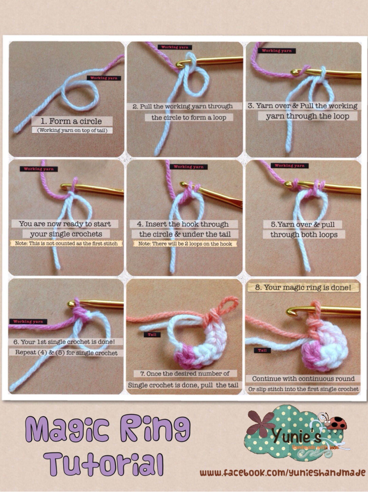
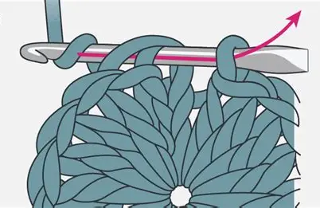
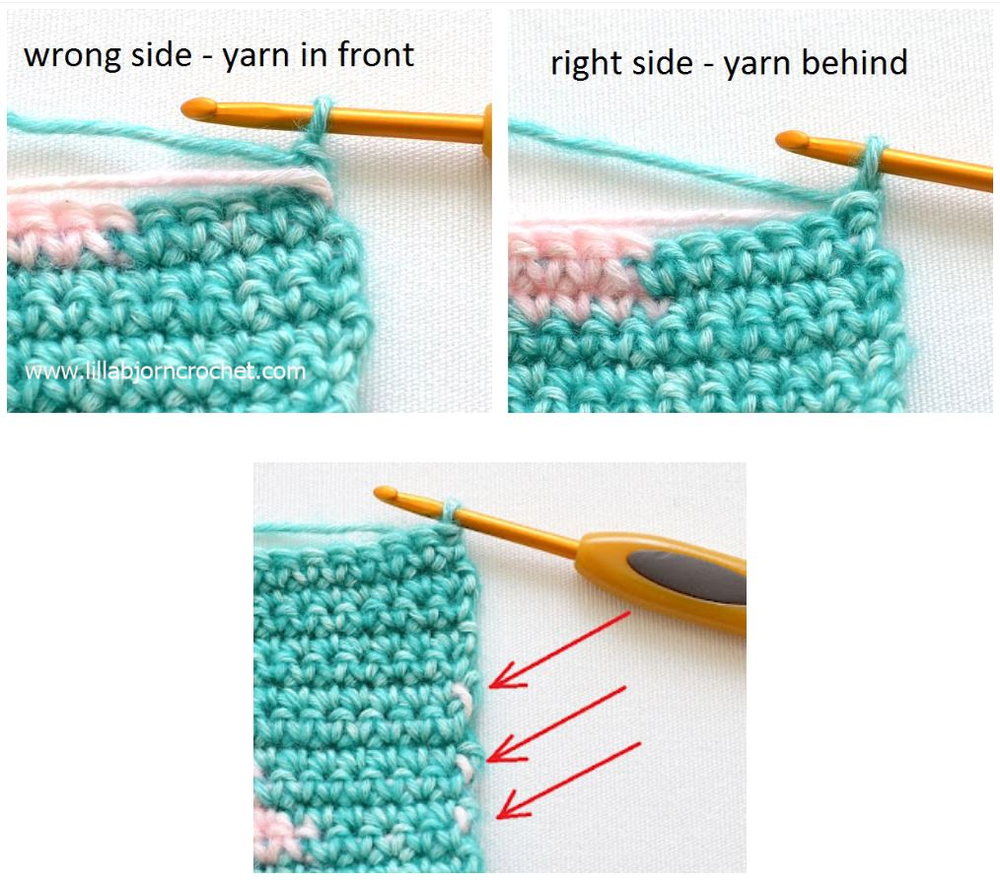

Magic Ring • Stitching in the Round • Color Changes
Welcome to the Intermediate Patterns module! In this lesson, you will learn three fundamental techniques:

The magic ring allows a clean, tight center when starting circular patterns.

Used for hats, coasters, amigurumi, and baskets.

Learn how to switch yarns without leaving bumps or knots.